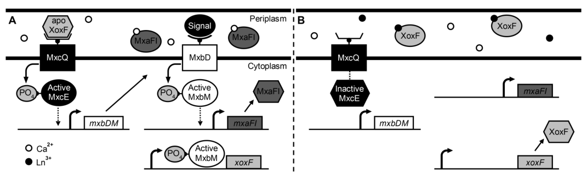

mxcE encodes the response regulator component of the MxcQE two-component regulatory system, functioning as a DNA-binding transcriptional activator positioned at the apex of the methanol dehydrogenase regulatory cascade. The protein contains a conserved N-terminal receiver domain with a characteristic (αβ)₅ fold that receives phosphoryl groups from the MxcQ sensor kinase on a conserved aspartate residue (Asp71 per UniProt), and a C-terminal LuxR-type winged helix-turn-helix DNA-binding domain. Upon phosphorylation, MxcE activity is modulated to promote DNA binding by its C-terminal effector domain, enabling it to activate expression from the mxbDM promoter and thereby control transcription of the second-tier two-component system MxbDM. This hierarchical regulatory architecture (MxcQE then MxbDM then mxa operon) integrates environmental signals, including the lanthanide-dependent switch between the Ca-dependent (mxa) and lanthanide-dependent (xox1) methanol dehydrogenase systems, to control methanol oxidation capacity. MxcE is required for methanol metabolism, since cell-free extracts from mxcE mutant strains show zero or reduced binding activity towards the mxaF promoter, and mxcE mutants exhibit altered transcription of methylotrophy genes.
| GO Term | Evidence | Action | Reason |
|---|---|---|---|
|
GO:0000160
phosphorelay signal transduction system
|
IEA
GO_REF:0000002 |
ACCEPT |
Summary: Correct - MxcE is the response regulator of the MxcQE two-component system, receiving phosphoryl groups from the MxcQ sensor kinase on a conserved aspartate in its N-terminal receiver domain and modulating downstream transcription. This is well supported by both domain architecture (UniProt Response regulatory domain 21-138; 4-aspartylphosphate at residue 71) and the literature.
Supporting Evidence:
file:METEA/mxcE/mxcE-claude-deep-research.md
the mxcE gene encoding the response regulator component that translates phosphorylation signals from the MxcQ sensor kinase into transcriptional activation
file:METEA/mxcE/mxcE-deep-research-falcon.md
the phosphate is transferred to a cognate **response regulator** on a conserved aspartate in the N-terminal **receiver (REC) domain**
|
|
GO:0003677
DNA binding
|
IEA
GO_REF:0000120 |
ACCEPT |
Summary: Correct - MxcE contains a C-terminal LuxR-type winged helix-turn-helix effector domain (UniProt HTH luxR-type domain 160-225) that mediates DNA binding. Mutational evidence shows that mxcE mutant extracts have reduced or zero binding to the mxaF promoter, and MxcE activates expression from the mxbDM promoter. While DNA binding is correct, the more specific molecular function is DNA-binding transcription activator activity (GO:0001216; see core_functions).
Supporting Evidence:
file:METEA/mxcE/mxcE-claude-deep-research.md
a C-terminal effector domain with a winged helix-turn-helix fold that mediates DNA binding
file:METEA/mxcE/mxcE-claude-deep-research.md
cell-free extracts from mxcQ and mxcE mutant strains had zero or reduced binding activity towards the promoter fragments of the mxaF gene
|
|
GO:0006355
regulation of DNA-templated transcription
|
IEA
GO_REF:0000002 |
ACCEPT |
Summary: Correct - MxcE functions as a transcriptional activator within the methanol-oxidation regulatory cascade. It activates expression from the mxbDM promoter, which in turn controls expression of the mxa (Ca-dependent methanol dehydrogenase) operon. mxcE mutants show altered transcriptional output at methylotrophy promoters.
Supporting Evidence:
file:METEA/mxcE/mxcE-claude-deep-research.md
the effector domain functions as a DNA-binding transcriptional activator that recognizes specific promoter sequences and recruits RNA polymerase
file:METEA/mxcE/mxcE-deep-research-falcon.md
mutation of **mxcE** changes transcriptional outputs at specific promoters
|
|
GO:0001216
DNA-binding transcription activator activity
|
NAS | NEW |
Summary: More specific molecular function than the generic GO:0003677 (DNA binding) IEA annotation. MxcE is a DNA-binding transcriptional activator whose C-terminal LuxR-type effector domain recognizes promoter sequences and recruits RNA polymerase; it activates expression from the mxbDM promoter, and mxcE mutant extracts lose binding to the mxaF promoter.
Reason: Captures the precise transcription activator molecular function supported by the literature; refines the generic DNA binding term used in core_functions.
Supporting Evidence:
file:METEA/mxcE/mxcE-claude-deep-research.md
the effector domain functions as a DNA-binding transcriptional activator that recognizes specific promoter sequences and recruits RNA polymerase
|
|
GO:0005737
cytoplasm
|
NAS | NEW |
Summary: MxcE is a two-component response regulator and, like response regulators of this class, acts in the cytoplasm where it interacts with DNA and transcriptional machinery after phosphorylation. No direct localization experiment exists, so this is an inference consistent with response regulator biology (added to align core_functions with existing annotations).
Reason: Core function localization term not present in existing_annotations; supported by response regulator biology.
Supporting Evidence:
file:METEA/mxcE/mxcE-deep-research-falcon.md
response regulators in this class generally function in the **cytoplasm**
|
The precise regulation of metabolic gene expression in bacteria requires sophisticated signal transduction mechanisms that can integrate environmental information and translate it into appropriate transcriptional responses. In methylotrophic bacteria, the expression of methanol dehydrogenase—the enzyme catalyzing the first and rate-limiting step in methanol oxidation—is controlled by a complex regulatory hierarchy involving multiple two-component signal transduction systems. At the apex of this hierarchy sits the MxcQE two-component system, with the mxcE gene encoding the response regulator component that translates phosphorylation signals from the MxcQ sensor kinase into transcriptional activation of downstream regulatory genes.
The mxcE gene was first identified in Methylobacterium organophilum XX through genetic analyses searching for loci required for methanol dehydrogenase synthesis [PMID:7582014, "nucleotide sequence of the mxcQ and mxcE genes, required for methanol dehydrogenase synthesis in Methylobacterium organophilum XX"]. Sequence analysis revealed that mxcE shows significant similarity to prokaryotic two-component system response regulators, establishing it as a member of this widespread family of bacterial transcriptional regulators. The essential role of MxcE in methanol metabolism was demonstrated through mutational studies showing that cell-free extracts from mxcE mutant strains had reduced or zero binding activity towards promoter fragments of the mxaF gene [PMID:7582014, "cell-free extracts from mxcQ and mxcE mutant strains had zero or reduced binding activity towards the promoter fragments of the mxaF gene"], indicating that MxcE is required for transcriptional activation of methanol dehydrogenase genes.
Response regulators are typically multidomain proteins with a conserved N-terminal regulatory domain and a variable C-terminal effector domain that commonly mediates transcriptional regulation [Web search, "Response regulators (RRs) are typically multidomain proteins with a conserved N-terminal regulatory domain and a variable C-terminal effector domain that commonly mediates transcriptional regulation"]. The regulatory domain catalyzes phosphoryl group transfer from the cognate sensor kinase, with phosphorylation stabilizing a conformation that promotes activity of the effector domain. In the case of MxcE, the effector domain functions as a DNA-binding transcriptional activator that recognizes specific promoter sequences and recruits RNA polymerase to activate gene expression.
The discovery of the lanthanide switch mechanism and the complex regulatory circuits governing expression of calcium-dependent and lanthanide-dependent methanol oxidation systems has revealed that MxcE plays a more sophisticated role than initially appreciated. Rather than directly controlling methanol dehydrogenase gene expression, MxcE activates expression from the mxbDM promoter region, creating a cascade of regulation in which MxcE activates expression of mxbM, which when translated activates expression from the mxa promoter [Web search, "MxcE has been shown to be involved in the activation of expression from the mxbDM promoter region, predicting a cascade of regulation, with MxcE activating the expression of mxbM, which, when translated, activates expression from the mxa promoter"]. This hierarchical regulatory architecture enables integration of multiple environmental signals and sophisticated control over methanol oxidation capacity.
The mxcE gene encodes a DNA-binding response regulator that functions as part of the MxcQE two-component system. The sequence of mxcE shows significant similarity to sequences of prokaryotic two-component systems, especially MxaY and MxaX proteins from Paracoccus denitrificans [PMID:7582014, "show[s] significant similarity to sequences of prokaryotic two-component systems, especially MxaY and MxaX proteins of...Paracoccus denitrificans"], indicating evolutionary conservation of this regulatory mechanism across diverse methylotrophic bacteria. This sequence conservation suggests that the MxcQE regulatory system arose early in the evolution of methylotrophy and has been maintained due to its important function in coordinating methanol metabolism.
Response regulators with DNA-binding effector domains are the most common response regulators and have direct impacts on transcription [Web search, "Regulators with a DNA-binding effector domain are the most common response regulators, and have direct impacts on transcription"]. They tend to interact with their cognate kinases at an N-terminus receiver domain and contain the DNA-binding effector towards the C-terminus. This modular two-domain architecture—with the N-terminal receiver domain receiving and integrating phosphorylation signals and the C-terminal DNA-binding domain executing the transcriptional response—represents the predominant structural paradigm for transcriptional response regulators.
The widespread distribution of two-component systems across bacterial lineages, with response regulators representing one of the largest protein families in bacteria, reflects the fundamental importance of this signaling mechanism for bacterial adaptation to changing environments. The conservation of the mxcE gene specifically in methylotrophic bacteria, coupled with its essential role in methanol oxidation gene regulation, indicates that this regulatory system has been subject to strong selective pressure. Methylotrophic bacteria that lack functional MxcE cannot properly regulate methanol dehydrogenase expression and consequently exhibit impaired growth on methanol, demonstrating the fitness consequences of regulatory dysfunction.
Although high-resolution structural information specifically for MxcE from Methylorubrum extorquens has not been reported, the protein can be understood through the well-characterized structural paradigms of response regulator families. Based on sequence homology and functional characterization, MxcE likely belongs to the OmpR/PhoB family of response regulators, which represents the largest family containing thousands of proteins [Web search, "PhoP belongs to the OmpR/PhoB family of RRs, which is the largest family containing thousands of proteins"]. Members of this family have two distinct domains: an N-terminal receiver domain that contains the conserved aspartate residue as the phosphorylation site, and a C-terminal effector domain with a winged helix-turn-helix fold that mediates DNA binding.
The receiver domain of response regulators adopts a characteristic (αβ)₅ fold, consisting of a central five-stranded parallel β-sheet surrounded by five α-helices [Web search, "Receiver domains have an (αβ)5 fold"]. This structural architecture, first defined in the prototypical response regulator CheY, is referred to as the "CheY fold" and has been conserved across the entire response regulator superfamily. The (αβ)₅ topology creates a compact globular domain with the active site positioned in a cleft formed by loops connecting the β-strands and α-helices.
The active site that mediates both phosphorylation and dephosphorylation of receiver domains is primarily comprised of a quintet of conserved residues located largely on loops that connect secondary structural elements [Web search, "The active site that mediates both phosphorylation and dephosphorylation of receiver domains is primarily comprised of a quintet of conserved residues located largely on loops that connect secondary structural elements"]. This active site is defined by a quintet of highly conserved residues composed of three aspartates, a lysine, and either a threonine or a serine [Web search, "an active site defined by a quintet of highly conserved residues composed of three aspartates, a lysine, and either a threonine or a serine"]. These conserved residues coordinate the phosphoryl group and the magnesium cofactor essential for catalysis, creating the catalytic machinery for phosphotransfer.
The phosphorylation site is a specific aspartate residue located in the active site pocket. Phosphorylation of this conserved aspartate at the active site mediates a conformational change at a distal signaling surface that modulates protein-protein interactions and downstream activities [Web search, "Phosphorylation of a conserved aspartate at the active site mediates a conformational change at a distal signaling surface"]. For CheY, the paradigm member of this family, phosphorylation of the conserved aspartate in the active site allows hydrogen bonding that leads to rotation of a critical tyrosine residue, termed "Y-T coupling" [Web search, "Phosphorylation of the conserved Asp residue in the active site allows hydrogen bonding of the T87 Oγ to phospho-aspartate, which in turn leads to the rotation of Y106 into the 'in' position (termed Y-T coupling)"]. Similar conformational coupling mechanisms likely operate in MxcE, though the specific residues involved may differ.
The receiver domain exists in equilibrium between "inactive" and "active" conformations, with phosphorylation stabilizing the active conformation [Web search, "The receiver domain exists in equilibrium between 'inactive' and 'active' conformations, with phosphorylation stabilizing the active conformation"]. In the inactive state, the receiver domain adopts a conformation that does not productively interact with the DNA-binding domain. Phosphorylation shifts this equilibrium toward the active conformation, which exhibits altered interdomain orientations and enhanced interactions with the C-terminal effector domain. This phosphorylation-dependent conformational switch represents the fundamental mechanism by which response regulators translate kinase activity into downstream outputs.
The C-terminal domain of MxcE, like other OmpR/PhoB family response regulators, likely adopts a winged helix-turn-helix architecture. OmpR and other OmpR-like response regulators have a "winged helix" architecture, and OmpR-like response regulators are the largest group of response regulators with the winged helix motif being widespread [Web search, "OmpR and other OmpR-like response regulators have a 'winged helix' architecture"]. The crystal structure of the E. coli OmpR C-terminal domain, determined at 1.95 Å resolution, shows that the structure consists of three α helices packed against two antiparallel β sheets [Web search, "the structure consists of three α helices packed against two antiparallel β sheets"]. Two helices, α2 and α3, and the ten-residue loop connecting them constitute a variation of the helix-turn-helix (HTH) motif [Web search, "Two helices, α2 and α3, and the ten residue loop connecting them constitute a variation of the helix-turn-helix (HTH) motif"].
The helix-turn-helix motif is a common DNA-binding structural element in which one helix (the recognition helix) inserts into the major groove of DNA and makes sequence-specific contacts with nucleotide bases, while the other helix provides structural support. In winged helix-turn-helix domains, the "wings"—β-sheet structures flanking the HTH motif—provide additional DNA-contacting surfaces, typically interacting with the minor groove or the DNA backbone. Specific contacts are observed from the OmpR_c recognition helix with the DNA major groove and the wing region with the minor groove [Web search, "Specific contacts were observed from the OmpRc recognition helix with the DNA major groove...and the wing region with the minor groove"], enabling both sequence-specific recognition and non-specific electrostatic interactions that stabilize the protein-DNA complex.
For OmpR specifically, DNA contact residues include Val203, Arg207, and Arg209, with the arginine residues making critical contacts with guanine bases in the major groove [Web search, "DNA contact residues are Val203 (T), Arg207 (G), and Arg209 (phosphate backbone)"]. While the specific DNA contact residues in MxcE have not been experimentally determined, sequence alignment with characterized OmpR family members combined with mutational analysis could identify the critical residues mediating DNA binding in MxcE. Understanding these contacts would enable prediction of the DNA sequences recognized by MxcE and potentially allow engineering of MxcE variants with altered DNA-binding specificity.
The activation mechanism of MxcE follows the canonical pathway established for OmpR/PhoB family response regulators, involving phosphorylation-induced conformational changes that promote dimerization and enhance DNA binding. OmpR/PhoB family proteins become activated through phosphorylation, which facilitates an allosteric change enabling homodimerization and subsequently enhanced DNA binding [Web search, "OmpR/PhoB family proteins become activated through phosphorylation, which facilitates an allosteric change enabling homodimerization and subsequently enhanced DNA binding"]. This multi-step activation cascade—phosphorylation → conformational change → dimerization → DNA binding—represents a sophisticated mechanism that ensures transcriptional responses occur only when appropriate signals are present.
The activation process begins with phosphotransfer from the cognate histidine kinase MxcQ. Following autophosphorylation of MxcQ on a conserved histidine residue in response to environmental signals, MxcE catalyzes the transfer of the phosphoryl group from the phosphohistidine on MxcQ to a conserved aspartate residue in its own receiver domain. This phosphotransfer reaction is highly specific, mediated by complementary protein-protein interaction surfaces on MxcQ and MxcE that ensure efficient and selective phosphorylation of the cognate partner while excluding cross-talk with non-cognate two-component pairs.
The phosphorylation reaction requires magnesium as a cofactor, which coordinates the phosphoryl group and stabilizes the transition state. The conserved active site residues—the three aspartates, the lysine, and the threonine or serine—create a precisely organized catalytic environment that positions the incoming phosphoryl group and stabilizes the developing negative charge during the phosphotransfer reaction. The high-energy phosphoaspartyl bond formed during this reaction is relatively unstable compared to phosphoserine or phosphothreonine bonds in eukaryotic signaling, enabling rapid reversibility through either autodephosphorylation or phosphatase-catalyzed dephosphorylation.
Phosphorylation of the receiver domain results in a conformational change that alters a surface necessary for output function [Web search, "Phosphorylation of the receiver domain results in a conformational change that alters a surface necessary for output function"]. Phosphorylation at the active site promotes conformational changes propagated throughout the receiver domain, promoting opening of a hydrophobic pocket essential for homodimer formation and enhanced DNA-binding activity [Web search, "Phosphorylation at the active site promotes conformational changes propagated throughout the receiver domain, promoting opening of a hydrophobic pocket essential for homodimer formation and enhanced DNA-binding activity"]. These conformational changes are not limited to the immediate vicinity of the phosphorylation site but rather propagate through the protein structure via a network of coupled structural rearrangements.
For FixJ, a well-characterized response regulator, phosphorylation of the conserved aspartate induces major structural changes in the β4–α4 loop and in the signaling surface α4–β5 that mediates dimerization of the phosphorylated full-length response regulator [Web search, "phosphorylation of the conserved aspartate induces major structural changes in the β4–α4 loop and in the signaling surface α4–β5 that mediates dimerization"]. Similar structural rearrangements likely occur in MxcE, with phosphorylation triggering changes in loops and secondary structural elements that ultimately expose or reorient surfaces required for dimerization and DNA binding.
Studies on VraR from Staphylococcus aureus showed that unphosphorylated VraR exists in a closed conformation that inhibits dimer formation, while phosphorylation promotes conformational changes throughout the receiver domain [Web search, "unphosphorylated VraR exists in a closed conformation that inhibits dimer formation, while phosphorylation promotes conformational changes throughout the receiver domain"]. The "closed" versus "open" conformational states represent functionally inactive versus active forms of the response regulator. In the closed state, critical dimerization surfaces are occluded or improperly oriented, preventing productive protein-protein interactions. Phosphorylation acts as a molecular switch that opens the structure, exposing these surfaces and enabling dimerization.
In dimerizing response regulators, conformational change allows two monomers to dimerize along the α4-β5-α5 surface [Web search, "In dimerizing response regulators, conformational change allows two monomers to dimerize along the α4-β5-α5 surface"]. This dimer interface invariably involves the α4-β5-α5 face of the receiver domain, the locus of the largest differences between inactive and active conformations and the surface that mediates dimerization of receiver domains in the active state [Web search, "These interfaces invariably involve the α4-β5-α5 face of the receiver domain, the locus of the largest differences between inactive and active conformations"]. The α4-β5-α5 surface represents a hot spot for conformational changes upon phosphorylation, with structural rearrangements in this region enabling formation of the dimer interface.
Once phosphorylated, MxcE likely forms homodimers through receiver domain-receiver domain interactions along this conserved interface. Dimerization is essential for high-affinity DNA binding, as most response regulators recognize palindromic or quasi-palindromic DNA sequences that accommodate binding of two DNA-binding domains positioned by the dimeric architecture. The cooperative effects of dimerization and DNA binding create a sharp threshold for activation—low levels of phosphorylation produce predominantly monomeric MxcE with weak DNA-binding affinity, while higher phosphorylation levels drive dimer formation and strong DNA binding, enabling switch-like transcriptional responses.
Once phosphorylated, response regulators dimerize, gain enhanced DNA binding capacity, and act as transcription factors [Web search, "Once phosphorylated at the receiver domain, the response regulator dimerizes, gains enhanced DNA binding capacity and acts as a transcription factor"]. The enhancement of DNA-binding affinity upon phosphorylation can be substantial, with phosphorylation increasing binding affinity by 10-100 fold in many characterized systems. This phosphorylation-dependent enhancement arises from multiple factors: (1) dimerization increases the effective concentration of DNA-binding domains and enables cooperative binding to tandem recognition sites, (2) conformational changes in the DNA-binding domain may directly increase its affinity for DNA, and (3) altered interdomain orientations may relieve autoinhibitory interactions that suppress DNA binding in the unphosphorylated state.
DNA-binding response regulators of the OmpR/PhoB subfamily alternate between inactive and active conformational states, with the latter having enhanced DNA-binding affinity [Web search, "DNA-binding response regulators (RRs) of the OmpR/PhoB subfamily alternate between inactive and active conformational states, with the latter having enhanced DNA-binding affinity"]. Phosphorylation of an aspartate residue in the receiver domain, usually via phosphotransfer from a cognate histidine kinase, stabilizes the active conformation. In the active state, the DNA-binding domains of the dimer are properly positioned to engage their target DNA sequences, with each monomer contacting one half of a palindromic or quasi-palindromic recognition element.
Comprehensive analysis of OmpR phosphorylation, dimerization, and DNA binding supports a canonical model for activation in which these events occur sequentially and cooperatively [Web search reference to comprehensive OmpR analysis]. This model holds that phosphorylation is the primary trigger that initiates the activation cascade, dimerization is facilitated by phosphorylation-induced conformational changes, and high-affinity DNA binding requires both phosphorylation and dimerization. For MxcE, this canonical pathway likely operates to ensure that transcriptional activation of the mxbDM operon occurs only when MxcQ detects appropriate environmental signals and phosphorylates MxcE.
The most distinctive feature of MxcE function is its position at the top of a hierarchical regulatory cascade. MxcE has been shown to be involved in the activation of expression from the mxbDM promoter region [Web search, "MxcE has been shown to be involved in the activation of expression from the mxbDM promoter region"], predicting a cascade of regulation with MxcE activating the expression of mxbM, which when translated activates expression from the mxa promoter. This creates a three-tier regulatory architecture: MxcQE (tier 1, master regulators) → MxbDM (tier 2, intermediate regulators) → mxa operon (tier 3, metabolic genes).
The sensor-regulator pair MxcQE controls expression of the sensor-regulator pair MxbDM, and MxbDM in turn controls expression of a number of genes involved in methanol oxidation [Web search, "The sensor-regulator pair MxcQE controls expression of the sensor-regulator pair MxbDM, and MxbDM in turn controls expression of a number of genes involved in methanol oxidation"]. This hierarchical organization means that MxbD (the sensor kinase) and MxbM (the response regulator) are only produced when MxcE is active and binding to the mxbDM promoter. The genetic organization creates a regulatory switch where entire downstream regulatory systems are turned on or off based on the activity state of upstream regulators.
Experimental evidence supporting this hierarchy comes from promoter fusion studies. When examining mxbD promoter activity using xylE fusions, expression was reduced to non-detectable levels in MxcQ and MxcE mutants [Web search, "xyIE expression was reduced to non-detectable levels in MxcQ and MxcE mutants when examining mxbD promoter activity"], confirming that MxcE is essential for activating the mxbDM promoter. The complete loss of mxbD expression in mxcE mutants demonstrates that MxcE is an obligate activator—mxbD is not expressed at significant levels through alternative regulatory pathways or basal transcription but absolutely requires MxcE for activation.
Both the MxcE and MxbM response regulators are required for the expression of the mxa operon, with MxcE having an indirect effect [Web search, "Both the MxcE and MxbM response regulators are required for the expression of the mxa operon, with MxcE having an indirect effect"]. Expression from the mxa promoter was severely repressed, resulting in below-background levels of fluorescence detected in each of the response regulator mutant strains (mxcE and mxbM) [Web search, "expression from the mxa promoter was severely repressed, resulting in below-background levels of fluorescence detected in each of the response regulator mutant strains (mxcE and mxbM)"]. The equivalent phenotypes of mxcE and mxbM deletions on mxa expression indicates that both are essential and function sequentially—MxcE activates mxbM expression, and MxbM activates mxa expression.
The physiological rationale for this hierarchical organization likely relates to signal integration and response dynamics. By having MxcE control expression of an entire downstream two-component system rather than directly controlling metabolic genes, the regulatory architecture enables:
Signal amplification: Small changes in MxcQ activity lead to changes in mxbDM expression, which can produce larger changes in mxa expression, creating sensitivity to subtle environmental signals.
Multi-input integration: MxcQE responds to one set of signals while MxbDM can respond to additional signals, with mxa expression reflecting integration of both inputs.
Temporal dynamics: Cascades can generate delayed responses, pulses, or adaptation behaviors that are difficult to achieve with single-layer regulation.
Conditional activation: mxa genes are expressed only when both MxcE is active (indicating one set of environmental conditions) and MxbM is active (indicating additional conditions), creating an AND gate logic for gene expression.
As a transcriptional activator, MxcE must perform two essential functions: recognize and bind to specific DNA sequences in the mxbDM promoter region, and recruit or activate RNA polymerase to initiate transcription. The molecular mechanisms underlying both functions have been informed by studies of related OmpR family response regulators, though the specific details for MxcE await experimental characterization.
Proteins from wild-type M. organophilum XX cells were able to bind specifically to the upstream region of methanol dehydrogenase large subunit gene (mxaF) [PMID:7582014, "protein(s) from wild-type cells were able to bind specifically to the upstream region of methanol dehydrogenase large subunit gene"], while cell-free extracts from mxcQ and mxcE mutant strains had zero or reduced binding activity towards the promoter fragments of the mxaF gene. While this early study examined binding to mxaF promoter regions (likely detecting indirect effects or cross-reactivity), subsequent work established that MxcE's direct target is the mxbDM promoter.
The specific DNA sequences recognized by MxcE in the mxbDM promoter have not been definitively mapped. However, based on the paradigm established for OmpR family members, MxcE likely recognizes a palindromic or quasi-palindromic sequence element located in the region upstream of the mxbDM transcription start site. Deletion analysis of the mxbD promoter identified a critical 229-129 bp upstream region [Web search, "Deletion analysis identified a critical 229-129 bp upstream region" in context of mxbD promoter], suggesting that regulatory elements essential for MxcE binding reside in this region.
OmpR family response regulators typically recognize DNA sequences of 15-20 bp with dyad symmetry, allowing the two subunits of the homodimer to make similar contacts with each half-site. The recognition helix (α3) of the helix-turn-helix motif inserts into the major groove and contacts specific bases, while the wing regions contact the minor groove or the DNA backbone. The combination of sequence-specific major groove contacts and non-specific minor groove or backbone contacts provides both specificity (ensuring binding to correct promoters) and affinity (stabilizing the protein-DNA complex).
Once bound to DNA, MxcE must activate transcription from the mxbDM promoter. For bacterial transcriptional activators, the primary mechanism of activation is recruitment of RNA polymerase to the promoter. Response regulators typically activate transcription by recruiting RNA polymerase holoenzyme, making protein-protein contacts with the σ subunit or the α-CTD (C-terminal domain of the α subunit) to stabilize polymerase binding at the promoter and facilitate open complex formation.
For gene transcription to occur, transcription factors recruit intermediary proteins such as cofactors that allow efficient recruitment of the preinitiation complex and RNA polymerase [Web search, "For gene transcription to occur, transcription factors recruit intermediary proteins such as cofactors that allow efficient recruitment of the preinitiation complex and RNA polymerase"]. In bacteria, this recruitment is typically more direct than in eukaryotes, with activators often contacting RNA polymerase directly without requiring numerous intermediary cofactors. However, some bacterial activators do utilize cofactors or co-activators to modulate their activity or enhance recruitment efficiency.
For bacterial transcriptional activators, inducer recognition does not necessarily affect DNA-binding affinity but rather affects polymerase recruitment and/or promoter architecture [Web search, "For bacterial transcriptional activators, inducer recognition does not necessarily affect DNA-binding affinity but rather affects polymerase recruitment and/or promoter architecture"]. This principle suggests that the phosphorylation-dependent activation of MxcE may involve not only enhanced DNA binding but also altered ability to productively recruit RNA polymerase. Phosphorylation-induced conformational changes might expose or properly orient surfaces that contact RNA polymerase, enabling transcriptional activation only when MxcE is in its phosphorylated active state.
The specific RNA polymerase σ factor required for mxbDM transcription has not been reported, though it is likely σ⁷⁰, the housekeeping σ factor responsible for transcription of most bacterial genes. Some response regulators activate transcription from σ⁵⁴-dependent promoters through specialized mechanisms involving ATP-dependent remodeling of the RNA polymerase-promoter complex. The NtrC/DctD subfamily of response regulators contains an AAA+ ATPase domain that induces open complex formation in σ⁵⁴-containing RNA polymerases in an ATP-dependent manner [Web search, "The NtrC/DctD subfamily of response regulators contains an AAA+ ATPase domain that induces open complex formation in σ54-containing RNA polymerases in an ATP-dependent manner"]. However, MxcE does not belong to this subfamily and likely activates transcription through the more common mechanism of recruiting σ⁷⁰-RNA polymerase.
While MxcE was initially characterized in the context of regulating the calcium-dependent methanol oxidation system, its function has taken on additional significance with the discovery of the lanthanide switch. The MxbDM two-component system, whose expression is controlled by MxcE, plays a central role in coordinating reciprocal expression of calcium-dependent (mxa) and lanthanide-dependent (xox1) methanol oxidation systems based on rare earth element availability.
The MxbDM two-component system, along with the xoxF1 and xoxF2 genes themselves, has been shown to be required for operation of the lanthanide switch [Web search, "The MxbDM two-component system along with the xoxF1 and xoxF2 genes themselves have been shown to be required for operation of the Ln-switch"]. Because MxbDM is only expressed when MxcE is active, MxcE necessarily plays an essential (albeit indirect) role in the lanthanide-responsive regulation of methanol oxidation. Without functional MxcE, the entire lanthanide switch mechanism fails, as the MxbDM regulatory system required for sensing and responding to lanthanide availability is not produced.
The MxbDM two-component system has been proposed to sense periplasmic lanthanides either directly or indirectly to facilitate differential regulation of the mxa and xox1 operons [Web search, "The MxbDM two-component system has been proposed to sense periplasmic Ln either directly or indirectly to facilitate differential regulation of the mxa and xox1 operons"]. Current models suggest that apo-XoxF (the lanthanide-free form of XoxF methanol dehydrogenase) interacts with sensor kinases MxcQ and/or MxbD to modulate their activity based on lanthanide availability. In the absence of lanthanides, apo-XoxF accumulates and signals through the two-component systems to activate mxa expression and repress xox1 expression. When lanthanides become available, apo-XoxF binds the metal and converts to holo-XoxF, altering the signaling state and causing reciprocal changes in gene expression.
A complex feedback loop exists in which XoxF is required for normal expression levels of both mxcQE and mxbDM, MxbDM decreases xox1 expression, and MxcQE is required for mxbDM expression, creating an interwoven regulation scheme for methanol oxidation genes [Web search, "A complex feedback loop exists where Xox is required for normal expression levels of both mxcQE and mxbDM, MxbDM decreases xox1 expression, and MxcQE is required for mxbDM expression"]. This regulatory circuit with multiple feedback loops creates a bistable switch that can maintain stable expression states (either mxa-high/xox1-low or mxa-low/xox1-high) while enabling switching between states in response to changing lanthanide availability.
The position of MxcE at the top of this regulatory hierarchy means that its activity state influences not only calcium-dependent methanol oxidation but also, indirectly, lanthanide-dependent pathways through control of the MxbDM switch. MxcE expression and activity thus represent potential control points for engineering methylotrophic bacteria to constitutively express one methanol oxidation system or the other, or to alter the sensitivity of the lanthanide switch. Understanding the signals that regulate MxcQ activity (and consequently MxcE phosphorylation) could enable rational manipulation of the entire methanol oxidation regulatory network.
The response time and sensitivity of the MxcQE → MxbDM → mxa regulatory cascade depend on the kinetics of multiple molecular processes: MxcQ autophosphorylation, phosphotransfer from MxcQ to MxcE, MxcE conformational changes and dimerization, MxcE binding to the mxbDM promoter, transcription of mxbDM, translation of MxbD and MxbM proteins, MxbD autophosphorylation, phosphotransfer to MxbM, and MxbM activation of mxa transcription. Each of these steps has characteristic rate constants that together determine the overall dynamics of the system.
Response regulator phosphorylation and dephosphorylation kinetics are critical determinants of signaling dynamics. Many response regulators exhibit relatively rapid autodephosphorylation, with half-lives on the order of minutes, enabling rapid signal termination when kinase activity decreases. Other response regulators are highly stable when phosphorylated, maintaining signaling output for extended periods after the initial stimulus. The autodephosphorylation rate of MxcE has not been experimentally determined but represents an important parameter influencing how quickly the system can respond to changing conditions.
Real-time detection of response regulator phosphorylation dynamics in live bacteria has revealed that phosphorylation can occur on timescales of seconds to minutes, with some systems showing rapid pulsatile dynamics while others exhibit sustained responses [Web search reference to real-time detection]. For MxcE, the dynamics likely reflect the integration of signals detected by MxcQ—if MxcQ detects a sustained environmental stimulus, MxcE phosphorylation may be maintained at high levels, driving continuous expression of mxbDM. If the stimulus is transient, MxcE phosphorylation may pulse, leading to bursts of mxbDM expression followed by decay as MxcE autodephosphorylates.
The hierarchical organization of the regulatory cascade introduces additional temporal complexity. Even if MxcE is rapidly phosphorylated in response to a signal, mxa expression cannot increase immediately because MxbM protein must first be synthesized from the MxcE-activated mxbDM promoter. This creates an inherent delay between MxcQ activation and mxa expression, potentially on the order of tens of minutes to hours depending on transcription and translation rates. Such delays can generate interesting dynamics including oscillations, adaptation, or delayed negative feedback, though whether such behaviors actually occur in this system remains to be experimentally determined.
While MxcE function has been characterized primarily in Methylobacterium/Methylorubrum species, comparative genomic analyses suggest that different methylotrophic lineages employ diverse regulatory strategies. Some methylotrophs possess clear MxcQE homologs, suggesting conservation of this regulatory mechanism. Others appear to use different regulatory systems, indicating that multiple evolutionary solutions to regulating methanol oxidation have arisen.
The conservation of particular response regulator families across methylotrophs, despite organizational differences, suggests that certain protein architectures are particularly well-suited for methanol metabolism regulation. The prevalence of OmpR/PhoB family response regulators in diverse regulatory roles across bacteria reflects the versatility of this protein family. The modular domain organization—with receiver domains and DNA-binding domains that can function semi-independently—enables evolution of new regulatory specificities through domain shuffling, modification of DNA-binding specificity, or altered phosphorylation dynamics.
Phylogenetic analyses examining the evolutionary relationships among methanol oxidation regulatory systems could reveal whether current diversity arose through vertical inheritance with modification or horizontal gene transfer. The similarity between MxcE from M. organophilum and MxaX from P. denitrificans suggests a shared evolutionary origin, but the detailed phylogenetic relationships across all methylotrophs remain to be comprehensively analyzed.
Despite decades of research on methanol oxidation regulation, numerous fundamental questions about MxcE remain unanswered. First, what is the detailed three-dimensional structure of MxcE? High-resolution structures would reveal the precise architecture of both the receiver and DNA-binding domains, the nature of interdomain interactions, and phosphorylation-induced conformational changes. Determining structures of MxcE in unphosphorylated and phosphorylated states, as monomers and dimers, and in complex with DNA would provide comprehensive structural understanding of the activation mechanism.
Second, what are the specific DNA sequences recognized by MxcE in the mxbDM promoter? Footprinting experiments, electrophoretic mobility shift assays, and ChIP-seq could map the precise binding sites. Understanding the DNA recognition code would enable prediction of all genomic sites bound by MxcE and could reveal additional regulatory targets beyond mxbDM.
Third, what are the kinetics of MxcE phosphorylation, autodephosphorylation, dimerization, and DNA binding? Quantitative biochemical and biophysical characterization would reveal the rate constants and equilibrium constants governing each step of activation. These parameters determine the dynamics of the regulatory response and the sensitivity of the system to signals.
Fourth, what are the specific protein-protein contacts between MxcE and RNA polymerase that mediate transcriptional activation? Identifying activation surfaces on MxcE and determining which RNA polymerase subunits it contacts would reveal the mechanism of transcriptional activation. Such information could enable engineering of MxcE variants with enhanced activation activity.
Fifth, how do cells regulate MxcE activity beyond phosphorylation? Are there additional post-translational modifications, protein-protein interactions, or small molecule effectors that modulate MxcE function? Many response regulators are subject to additional layers of regulation beyond simple phosphorylation, and MxcE may be as well.
Sixth, what fraction of cellular MxcE is phosphorylated under different growth conditions? Quantitative measurements of phosphorylation stoichiometry would reveal how completely the system is activated under different conditions and whether graded responses or switch-like behavior predominates.
Finally, can MxcE be engineered for synthetic biology applications? Can its DNA-binding specificity be altered to create synthetic transcriptional activators? Can its phosphorylation dynamics be tuned to create desired temporal response profiles? Engineering response regulators represents a promising approach for creating synthetic regulatory circuits, and MxcE could serve as a useful component for engineering methylotrophic metabolism.
The mxcE gene encodes a response regulator that functions as the transcriptional effector of the MxcQE two-component system, translating environmental signals detected by the MxcQ sensor kinase into activation of downstream regulatory genes. Through phosphorylation-dependent conformational changes, dimerization, and DNA binding, MxcE activates transcription from the mxbDM promoter, initiating a regulatory cascade that ultimately controls expression of methanol dehydrogenase and associated genes. This hierarchical regulatory architecture enables sophisticated signal integration and precise control of methanol oxidation capacity.
As a member of the OmpR/PhoB response regulator family, MxcE exemplifies the conserved structural and mechanistic principles that govern this large and important protein family. The modular two-domain organization, with an N-terminal receiver domain mediating phosphorylation-dependent activation and a C-terminal winged helix-turn-helix domain mediating sequence-specific DNA binding, represents a versatile architecture that bacteria have deployed for diverse regulatory purposes. The phosphorylation-dependent activation mechanism—involving conformational changes, dimerization, and enhanced DNA binding—creates a molecular switch that couples environmental sensing to transcriptional responses.
The position of MxcE at the apex of the methanol oxidation regulatory hierarchy, controlling expression of the MxbDM two-component system which in turn controls both mxa and xox1 operons, makes MxcE a critical control point for the entire methanol oxidation network. The discovery that this network includes the lanthanide switch—with reciprocal regulation of calcium-dependent and lanthanide-dependent methanol oxidation systems—has revealed that MxcE plays an indirect but essential role in one of the most sophisticated examples of metal-responsive metabolic regulation in bacteria.
As methylotrophy gains increasing attention for biotechnological applications, understanding regulatory systems like MxcE becomes crucial for metabolic engineering efforts. Engineering methylotrophic production strains requires the ability to control methanol oxidation capacity, coordinate methanol metabolism with biosynthetic pathways, and potentially decouple metabolic genes from their native regulation. The MxcE regulatory node, controlling expression of an entire downstream regulatory system, represents a strategic intervention point for such engineering efforts. Rational manipulation of MxcE—through altered expression levels, modified phosphorylation dynamics, or engineered DNA-binding specificity—could enable creation of methylotrophic strains with precisely controlled methanol utilization optimized for industrial bioprocesses.
The research report should be a detailed narrative explaining the function, biological processes, and localization of the gene product. Citations should be given for all claims.
You should prioritize authoritative reviews and primary scientific literature when conducting research. You can supplement
this with annotations you find in gene/protein databases, but these can be outdated or inaccurate.
We are specifically interested in the primary function of the gene - for enzymes, what reaction is catalyzed, and what is the substrate specificity? For transporters, what is the substrate? For structural proteins or adapters, what is the broader structural role? For signaling molecules, what is the role in the pathway.
We are interested in where in or outside the cell the gene product carries out its function.
We are also interested in the signaling or biochemical pathways in which the gene functions. We are less interested in broad pleiotropic effects, except where these elucidate the precise role.
Include evidence where possible. We are interested in both experimental evidence as well as inference from structure, evolution, or bioinformatic analysis. Precise studies should be prioritized over high-throughput, where available.
The retrieved AM1-focused literature consistently uses mxcE to denote the response regulator (RR) partner of the sensor histidine kinase mxcQ, together forming the MxcQE two-component system (TCS) involved in transcriptional control of methanol oxidation functions in Methylobacterium/Methylorubrum extorquens AM1 (vu2016lanthanidedependentregulationof pages 31-40, selvamani2020engineeringofrecombinant pages 1-3). This aligns with the user-provided UniProt description for C5ASP3 as a “two component transcriptional regulator.”
In bacterial two-component signaling, a sensor histidine kinase (HK) typically detects an environmental/physiological cue and autophosphorylates on a histidine residue; the phosphate is transferred to a cognate response regulator on a conserved aspartate in the N-terminal receiver (REC) domain, modulating RR activity (commonly via altered DNA binding through a C-terminal effector domain). In AM1 methanol-oxidation regulation, MxcQE is repeatedly described as a TCS involved in controlling expression of methanol oxidation genes (vu2016lanthanidedependentregulationof pages 31-40, selvamani2020engineeringofrecombinant pages 1-3).
AM1 methanol oxidation genetics historically partition key functions into multiple loci/clusters (e.g., the mxa structural/maturation cluster for Ca-dependent MDH), and regulatory modules include TCSs such as MxbDM and MxcQE (chistoserdova2003methylotrophyinmethylobacterium pages 4-5, vu2016lanthanidedependentregulationof pages 31-40). The mxc cluster is also recognized (in broader syntheses) as part of the genetic complement required for functional expression of MxaFI-type methanol dehydrogenase (MDH) (xie2023molecularmechanismsof pages 13-18).
A highly cited AM1 study on lanthanide-dependent regulation provides an explicit mechanistic hypothesis placing MxcQE (and MxbDM) upstream of mxa gene expression (the Ca-dependent methanol dehydrogenase system) and in reciprocal control with xox1 (lanthanide-dependent MDH system) (vu2016lanthanidedependentregulationof pages 31-40). In this model:
- In the absence of lanthanides, “apo-XoxF” is proposed to activate mxa and repress xox1, mediated through MxcQE and MxbDM.
- In the presence of lanthanides, XoxF is proposed to resume its catalytic role as a lanthanide-dependent MDH and no longer interact effectively with these TCSs, yielding repression of mxa and activation of xox1.
Importantly, the authors note that although MxcQE/MxbDM are required for mxa expression, whether this requirement is direct or indirect has not been demonstrated (vu2016lanthanidedependentregulationof pages 31-40).
A classic AM1 genetics study used xylE transcriptional fusions to measure promoter activity in wild type and regulatory mutants, including MxcE and MxcQ mutants (chistoserdova1997molecularandmutational pages 5-7). Transcription from tested loci was low in wild type but rose to moderate levels in regulatory methanol oxidation mutants, consistent with these genes being under negative control by the methanol oxidation regulatory system (chistoserdova1997molecularandmutational pages 5-7). Quantitatively (cells grown on succinate), catechol 2,3-dioxygenase activities (nmol min⁻¹ (mg protein)⁻¹) included:
- For an orf3 upstream region (pLC92B-A): AM1 6; MxcE 100; MxcQ 80; MxbD 320; MxbM 90.
- For an orf4 upstream region (pLC200G): AM1 10; MxcE 80; MxcQ 60; MxbD 290; MxbM 120.
These data show that mutation of mxcE changes transcriptional outputs at specific promoters in the broader methylotrophy genomic neighborhood, supporting a regulatory role for MxcE in the methanol-oxidation regulome (chistoserdova1997molecularandmutational pages 5-7).
MxcE is a two-component response regulator, and response regulators in this class generally function in the cytoplasm, where they interact with DNA and/or transcriptional machinery after phosphorylation. In AM1, the published functional context supports MxcE as a transcriptional regulator controlling promoter activity of methylotrophy genes (chistoserdova1997molecularandmutational pages 5-7, vu2016lanthanidedependentregulationof pages 31-40). (Direct localization experiments for MxcE were not found in the retrieved corpus; this localization assignment is consistent with RR function.)
A 2023 synthesis/thesis on rare earth element (REE/lanthanide) utilization in methylotrophs reiterates that >25 genes in five clusters (mxa, mxb, mxc, pqqABCDE, pqqFG) contribute to functional expression of MxaFI-type MDH, and summarizes the “REE switch” in which lanthanides suppress Mxa-type expression and promote Xox-type expression (xie2023molecularmechanismsof pages 13-18). While this 2023 document does not provide AM1 mxcE-specific mechanistic experiments, it represents a recent consolidation of the field’s view that the mxc cluster remains part of the canonical MDH-expression genetic system (xie2023molecularmechanismsof pages 13-18).
Within the tool-retrieved corpus, no 2023–2024 primary experimental paper specifically dissecting AM1 mxcE (e.g., ChIP-seq-defined regulon, phosphosignaling biochemistry, or structure) was retrievable. Consequently, AM1 mxcE-specific mechanistic statements remain largely anchored in foundational AM1 genetics and lanthanide-regulation work that is still authoritative and heavily cited (chistoserdova1997molecularandmutational pages 5-7, vu2016lanthanidedependentregulationof pages 31-40).
A practical implementation of AM1 methanol-oxidation regulatory machinery is the engineering of heterologous methanol sensors in E. coli using domain swapping. The study explicitly states that mxcQ/mxcE constitute a TCS involved in methanol metabolism regulation and builds a chimeric HK by fusing the MxcQ sensing region to the EnvZ transmitter domain (selvamani2020engineeringofrecombinant pages 1-3, selvamani2020engineeringofrecombinant pages 5-8).
Performance statistics (application-relevant): qRT-PCR and GFP reporter assays showed the engineered system’s strongest response at 0.01% methanol, with maximum GFP signal after ~8 h for the MxcQZ-derived sensor; the authors report that both chimeric TCS constructs could sense methanol down to 0.01% (selvamani2020engineeringofrecombinant pages 5-8). This demonstrates that key methanol-responsive sensing logic from the AM1 system can be repurposed for biotechnology (selvamani2020engineeringofrecombinant pages 5-8, selvamani2020engineeringofrecombinant pages 1-3).
The lanthanide-dependent regulation study provides a clear expert synthesis: MxcQE and MxbDM are required for mxa expression, but the directness of their regulatory effects is unresolved, motivating a model in which apo-XoxF is the lanthanide-responsive element interacting with these TCSs (vu2016lanthanidedependentregulationof pages 31-40). This is a critical “state of the evidence” statement: the pathway logic is strongly supported by genetic and reporter assays, but the molecular contacts (direct promoter binding by MxcE vs indirect cascades) remain a key open question (vu2016lanthanidedependentregulationof pages 31-40).
Most defensible functional annotation based on retrieved evidence:
- Molecular function: two-component response regulator (transcriptional regulator) acting within MxcQE to control transcriptional programs needed for methanol oxidation, particularly expression of the mxa (Ca-dependent MDH) system and associated methanol oxidation genes (vu2016lanthanidedependentregulationof pages 31-40, selvamani2020engineeringofrecombinant pages 1-3).
- Biological process: regulation of methylotrophy/methanol oxidation gene expression; participation in the lanthanide-responsive MDH switching network (mxa ↔ xox) as part of an integrated regulatory system (vu2016lanthanidedependentregulationof pages 31-40).
- Cellular component: consistent with response regulator biology, likely cytoplasmic regulator controlling promoter activity; experimental promoter-fusion phenotypes support a transcriptional regulatory role (chistoserdova1997molecularandmutational pages 5-7).
| Claim/Topic | Evidence summary | Organism/strain | Study type | Year | Source (with DOI URL) |
|---|---|---|---|---|---|
| Lanthanide-dependent model linking MxcQE/MxbDM to mxa vs xox1 regulation | Peer-reviewed study proposes that MxcQE and MxbDM are two-component systems required for expression of the mxa genes, although directness was not demonstrated. Working model: in the absence of lanthanides, apo-XoxF activates mxa and represses xox1 through MxcQE/MxbDM; in the presence of lanthanides, XoxF functions as a lanthanide-dependent methanol dehydrogenase and mxa is repressed while xox1 is activated. Figures 6–7 report promoter-reporter measurements from biological triplicates across increasing La concentrations and different lanthanides, supporting lanthanide-responsive switching of mxa and xox1 expression (vu2016lanthanidedependentregulationof pages 31-40, vu2016lanthanidedependentregulationof media 62176c9a, vu2016lanthanidedependentregulationof media cef778e0, vu2016lanthanidedependentregulationof media 0a65ce89). | Methylobacterium extorquens AM1 (now Methylorubrum extorquens AM1) | Primary experimental study with promoter-reporter assays and regulatory model | 2016 | Vu et al., Journal of Bacteriology (2016), DOI: https://doi.org/10.1128/JB.00937-15 |
| Regulatory mutant promoter-fusion evidence implicating MxcE/MxcQ in methanol-oxidation control | In xylE transcription-fusion assays for promoters upstream of orf3 and orf4, wild type showed low activity, while regulatory mutants showed elevated expression. Reported catechol 2,3-dioxygenase activities [nmol min^-1 (mg protein)^-1]: for orf3 fusion pLC92B-A, AM1 6, MxbD 320, MxbM 90, MxcE 100, MxcQ 80; for orf4 fusion pLC200G, AM1 10, MxbD 290, MxbM 120, MxcE 80, MxcQ 60. Authors concluded these loci are negatively controlled by the methanol-oxidation regulatory system; MxcE and MxcQ were among the regulatory methanol-oxidation mutants tested (chistoserdova1997molecularandmutational pages 5-7). | Methylobacterium extorquens AM1 and regulatory mutants (MxbD, MxbM, MxcE, MxcQ) | Primary genetic/promoter-fusion study | 1997 | Chistoserdova & Lidstrom, Microbiology (1997), DOI: https://doi.org/10.1099/00221287-143-5-1729 |
| Engineered methanol sensor demonstrates transferable sensing function from the MxcQ/MxcQE system | Study states that five genes—mxbDM, mxcQE, and mxaB—are responsible for transcription of methanol oxidation genes; mxcQ and mxbD are sensor kinases and mxcE and mxbM are response regulators. Researchers fused the M. extorquens AM1 MxcQ sensing region to the E. coli EnvZ transmitter domain (MxcQZ AM1). The resulting chimeric system produced maximum ompC transcription and GFP signal at 0.01% methanol after 8 h; both chimeric TCS constructs sensed methanol down to 0.01%. This supports functional methanol sensing associated with the native MxcQ/MxcQE regulatory framework, though it does not directly characterize native MxcE domains (selvamani2020engineeringofrecombinant pages 5-8, selvamani2020engineeringofrecombinant pages 1-3, selvamani2020engineeringofrecombinant pages 3-5). | Heterologous Escherichia coli carrying chimeric components derived from Methylobacterium extorquens AM1 | Synthetic biology / heterologous functional assay | 2020 | Selvamani et al., Microbiology and Biotechnology Letters (2020), DOI: https://doi.org/10.4014/mbl.1908.08009 |
| Genomic review places methanol oxidation genes in multiple chromosomal clusters and highlights remaining regulatory gaps | Genomic review of AM1 reports methanol oxidation genes are distributed in three chromosomal locations; one 12.5-kb cluster contains 14 mxa genes (mxaFJGIRSACKLDEHB), all transcribed in the same direction. The review states that genome analysis had identified about 30 new methylotrophy genes and that only “a few regulatory genes” involved in C1 oxidation/assimilation remained unidentified at the time, providing pathway context for regulators such as MxcQE. This review is valuable for placing MxcE within the broader methanol-oxidation network, though it does not itself experimentally resolve MxcE function (chistoserdova2003methylotrophyinmethylobacterium pages 4-5, chistoserdova2003methylotrophyinmethylobacterium pages 3-4). | Methylobacterium extorquens AM1 | Genomic review/minireview | 2003 | Chistoserdova et al., Journal of Bacteriology (2003), DOI: https://doi.org/10.1128/JB.185.10.2980-2987.2003 |
Table: This table compiles the most relevant evidence linking MxcE and the MxcQE two-component system to methanol oxidation regulation in Methylorubrum/Methylobacterium extorquens AM1. It integrates mechanistic, genetic, heterologous sensing, and genomic-context studies, with quantitative values where available.
The following retrieved images provide direct visual support for the central regulatory claims:
- Lanthanide-responsive mxa vs xox1 promoter expression (Vu et al. 2016 Figures 6–7) (vu2016lanthanidedependentregulationof media cef778e0, vu2016lanthanidedependentregulationof media 0a65ce89).
- Hypothesized regulatory model placing MxcQE/MxbDM downstream of apo-XoxF in the lanthanide switch (Vu et al. 2016 Figure 8) (vu2016lanthanidedependentregulationof media 62176c9a).
References
(vu2016lanthanidedependentregulationof pages 31-40): Huong N. Vu, Gabriel A. Subuyuj, Srividhya Vijayakumar, Nathan M. Good, N. Cecilia Martinez-Gomez, and Elizabeth Skovran. Lanthanide-dependent regulation of methanol oxidation systems in methylobacterium extorquens am1 and their contribution to methanol growth. Journal of Bacteriology, 198:1250-1259, Apr 2016. URL: https://doi.org/10.1128/jb.00937-15, doi:10.1128/jb.00937-15. This article has 227 citations and is from a peer-reviewed journal.
(selvamani2020engineeringofrecombinant pages 1-3): Vidhya Selvamani, Irisappan Ganesh, Sowon Chae, Murali kannan Maruthamuthu, and Soon Ho Hong. Engineering of recombinant escherichia coli towards methanol sensing using methylobacterium extroquens two-component systems. ArXiv, 48:24-31, Mar 2020. URL: https://doi.org/10.4014/mbl.1908.08009, doi:10.4014/mbl.1908.08009. This article has 3 citations.
(chistoserdova2003methylotrophyinmethylobacterium pages 4-5): Ludmila Chistoserdova, Sung-Wei Chen, Alla Lapidus, and Mary E. Lidstrom. Methylotrophy in methylobacterium extorquens am1 from a genomic point of view. Journal of Bacteriology, 185:2980-2987, May 2003. URL: https://doi.org/10.1128/jb.185.10.2980-2987.2003, doi:10.1128/jb.185.10.2980-2987.2003. This article has 402 citations and is from a peer-reviewed journal.
(xie2023molecularmechanismsof pages 13-18): R Xie. Molecular mechanisms of rare earth element utilization by methane-oxidizing bacteria and protease-producing bacteria. Unknown journal, 2023.
(chistoserdova1997molecularandmutational pages 5-7): Ludmila Chistoserdova and Mary E. Lidstrom. Molecular and mutational analysis of a dna region separating two methylotrophy gene clusters in methylobacterium extorquens am1. Microbiology, 143 ( Pt 5):1729-36, May 1997. URL: https://doi.org/10.1099/00221287-143-5-1729, doi:10.1099/00221287-143-5-1729. This article has 119 citations and is from a peer-reviewed journal.
(selvamani2020engineeringofrecombinant pages 5-8): Vidhya Selvamani, Irisappan Ganesh, Sowon Chae, Murali kannan Maruthamuthu, and Soon Ho Hong. Engineering of recombinant escherichia coli towards methanol sensing using methylobacterium extroquens two-component systems. ArXiv, 48:24-31, Mar 2020. URL: https://doi.org/10.4014/mbl.1908.08009, doi:10.4014/mbl.1908.08009. This article has 3 citations.
(vu2016lanthanidedependentregulationof media 62176c9a): Huong N. Vu, Gabriel A. Subuyuj, Srividhya Vijayakumar, Nathan M. Good, N. Cecilia Martinez-Gomez, and Elizabeth Skovran. Lanthanide-dependent regulation of methanol oxidation systems in methylobacterium extorquens am1 and their contribution to methanol growth. Journal of Bacteriology, 198:1250-1259, Apr 2016. URL: https://doi.org/10.1128/jb.00937-15, doi:10.1128/jb.00937-15. This article has 227 citations and is from a peer-reviewed journal.
(vu2016lanthanidedependentregulationof media cef778e0): Huong N. Vu, Gabriel A. Subuyuj, Srividhya Vijayakumar, Nathan M. Good, N. Cecilia Martinez-Gomez, and Elizabeth Skovran. Lanthanide-dependent regulation of methanol oxidation systems in methylobacterium extorquens am1 and their contribution to methanol growth. Journal of Bacteriology, 198:1250-1259, Apr 2016. URL: https://doi.org/10.1128/jb.00937-15, doi:10.1128/jb.00937-15. This article has 227 citations and is from a peer-reviewed journal.
(vu2016lanthanidedependentregulationof media 0a65ce89): Huong N. Vu, Gabriel A. Subuyuj, Srividhya Vijayakumar, Nathan M. Good, N. Cecilia Martinez-Gomez, and Elizabeth Skovran. Lanthanide-dependent regulation of methanol oxidation systems in methylobacterium extorquens am1 and their contribution to methanol growth. Journal of Bacteriology, 198:1250-1259, Apr 2016. URL: https://doi.org/10.1128/jb.00937-15, doi:10.1128/jb.00937-15. This article has 227 citations and is from a peer-reviewed journal.
(selvamani2020engineeringofrecombinant pages 3-5): Vidhya Selvamani, Irisappan Ganesh, Sowon Chae, Murali kannan Maruthamuthu, and Soon Ho Hong. Engineering of recombinant escherichia coli towards methanol sensing using methylobacterium extroquens two-component systems. ArXiv, 48:24-31, Mar 2020. URL: https://doi.org/10.4014/mbl.1908.08009, doi:10.4014/mbl.1908.08009. This article has 3 citations.
(chistoserdova2003methylotrophyinmethylobacterium pages 3-4): Ludmila Chistoserdova, Sung-Wei Chen, Alla Lapidus, and Mary E. Lidstrom. Methylotrophy in methylobacterium extorquens am1 from a genomic point of view. Journal of Bacteriology, 185:2980-2987, May 2003. URL: https://doi.org/10.1128/jb.185.10.2980-2987.2003, doi:10.1128/jb.185.10.2980-2987.2003. This article has 402 citations and is from a peer-reviewed journal.

id: C5ASP3
gene_symbol: mxcE
product_type: PROTEIN
taxon:
id: NCBITaxon:272630
label: Methylorubrum extorquens AM1
description: mxcE encodes the response regulator component of the MxcQE
two-component regulatory system, functioning as a DNA-binding transcriptional
activator positioned at the apex of the methanol dehydrogenase regulatory
cascade. The protein contains a conserved N-terminal receiver domain with a
characteristic (αβ)₅ fold that receives phosphoryl groups from the MxcQ sensor
kinase on a conserved aspartate residue (Asp71 per UniProt), and a C-terminal
LuxR-type winged helix-turn-helix DNA-binding domain. Upon phosphorylation,
MxcE activity is modulated to promote DNA binding by its C-terminal effector
domain, enabling it to activate expression from the mxbDM promoter and thereby
control transcription of the second-tier two-component system MxbDM. This
hierarchical regulatory architecture (MxcQE then MxbDM then mxa operon)
integrates environmental signals, including the lanthanide-dependent switch
between the Ca-dependent (mxa) and lanthanide-dependent (xox1) methanol
dehydrogenase systems, to control methanol oxidation capacity. MxcE is required
for methanol metabolism, since cell-free extracts from mxcE mutant strains show
zero or reduced binding activity towards the mxaF promoter, and mxcE mutants
exhibit altered transcription of methylotrophy genes.
existing_annotations:
- term:
id: GO:0000160
label: phosphorelay signal transduction system
evidence_type: IEA
original_reference_id: GO_REF:0000002
review:
summary: Correct - MxcE is the response regulator of the MxcQE
two-component system, receiving phosphoryl groups from the MxcQ sensor
kinase on a conserved aspartate in its N-terminal receiver domain and
modulating downstream transcription. This is well supported by both
domain architecture (UniProt Response regulatory domain 21-138;
4-aspartylphosphate at residue 71) and the literature.
action: ACCEPT
supported_by:
- reference_id: file:METEA/mxcE/mxcE-claude-deep-research.md
supporting_text: the mxcE gene encoding the response regulator
component that translates phosphorylation signals from the MxcQ
sensor kinase into transcriptional activation
- reference_id: file:METEA/mxcE/mxcE-deep-research-falcon.md
supporting_text: the phosphate is transferred to a cognate **response
regulator** on a conserved aspartate in the N-terminal **receiver
(REC) domain**
- term:
id: GO:0003677
label: DNA binding
evidence_type: IEA
original_reference_id: GO_REF:0000120
review:
summary: Correct - MxcE contains a C-terminal LuxR-type winged
helix-turn-helix effector domain (UniProt HTH luxR-type domain 160-225)
that mediates DNA binding. Mutational evidence shows that mxcE mutant
extracts have reduced or zero binding to the mxaF promoter, and MxcE
activates expression from the mxbDM promoter. While DNA binding is
correct, the more specific molecular function is DNA-binding
transcription activator activity (GO:0001216; see core_functions).
action: ACCEPT
supported_by:
- reference_id: file:METEA/mxcE/mxcE-claude-deep-research.md
supporting_text: a C-terminal effector domain with a winged
helix-turn-helix fold that mediates DNA binding
- reference_id: file:METEA/mxcE/mxcE-claude-deep-research.md
supporting_text: cell-free extracts from mxcQ and mxcE mutant strains
had zero or reduced binding activity towards the promoter fragments
of the mxaF gene
- term:
id: GO:0006355
label: regulation of DNA-templated transcription
evidence_type: IEA
original_reference_id: GO_REF:0000002
review:
summary: Correct - MxcE functions as a transcriptional activator within
the methanol-oxidation regulatory cascade. It activates expression from
the mxbDM promoter, which in turn controls expression of the mxa
(Ca-dependent methanol dehydrogenase) operon. mxcE mutants show altered
transcriptional output at methylotrophy promoters.
action: ACCEPT
supported_by:
- reference_id: file:METEA/mxcE/mxcE-claude-deep-research.md
supporting_text: the effector domain functions as a DNA-binding
transcriptional activator that recognizes specific promoter
sequences and recruits RNA polymerase
- reference_id: file:METEA/mxcE/mxcE-deep-research-falcon.md
supporting_text: mutation of **mxcE** changes transcriptional outputs
at specific promoters
- term:
id: GO:0001216
label: DNA-binding transcription activator activity
evidence_type: NAS
review:
summary: More specific molecular function than the generic GO:0003677 (DNA
binding) IEA annotation. MxcE is a DNA-binding transcriptional activator
whose C-terminal LuxR-type effector domain recognizes promoter sequences
and recruits RNA polymerase; it activates expression from the mxbDM
promoter, and mxcE mutant extracts lose binding to the mxaF promoter.
action: NEW
reason: Captures the precise transcription activator molecular function
supported by the literature; refines the generic DNA binding term used
in core_functions.
supported_by:
- reference_id: file:METEA/mxcE/mxcE-claude-deep-research.md
supporting_text: the effector domain functions as a DNA-binding
transcriptional activator that recognizes specific promoter
sequences and recruits RNA polymerase
- term:
id: GO:0005737
label: cytoplasm
evidence_type: NAS
review:
summary: MxcE is a two-component response regulator and, like response
regulators of this class, acts in the cytoplasm where it interacts with
DNA and transcriptional machinery after phosphorylation. No direct
localization experiment exists, so this is an inference consistent with
response regulator biology (added to align core_functions with existing
annotations).
action: NEW
reason: Core function localization term not present in existing_annotations;
supported by response regulator biology.
supported_by:
- reference_id: file:METEA/mxcE/mxcE-deep-research-falcon.md
supporting_text: response regulators in this class generally function
in the **cytoplasm**
core_functions:
- description: MxcE functions as a DNA-binding transcription activator that
controls expression of the mxbDM two-component system genes. As the
response regulator of the MxcQE two-component system, MxcE receives a
phosphoryl group from the MxcQ sensor kinase on a conserved aspartate in
its N-terminal receiver domain; phosphorylation modulates the activity of
its C-terminal LuxR-type winged helix-turn-helix effector domain to
promote DNA binding. MxcE activates expression from the mxbDM promoter,
creating a regulatory cascade (MxcQE then MxbDM then mxa operon) in which
MxcE ultimately controls methanol dehydrogenase gene expression. This
hierarchical architecture integrates environmental signals, including the
lanthanide-dependent switch between the Ca-dependent (mxa) and
lanthanide-dependent (xox1) methanol oxidation systems.
molecular_function:
id: GO:0001216
label: DNA-binding transcription activator activity
directly_involved_in:
- id: GO:0000160
label: phosphorelay signal transduction system
- id: GO:0006355
label: regulation of DNA-templated transcription
locations:
- id: GO:0005737
label: cytoplasm
supported_by:
- reference_id: file:METEA/mxcE/mxcE-claude-deep-research.md
supporting_text: the effector domain functions as a DNA-binding
transcriptional activator that recognizes specific promoter sequences
and recruits RNA polymerase
- reference_id: file:METEA/mxcE/mxcE-deep-research-falcon.md
supporting_text: to denote the **response regulator (RR)** partner of
the sensor histidine kinase **mxcQ**, together forming the **MxcQE
two-component system (TCS)**
- reference_id: file:METEA/mxcE/mxcE-deep-research-falcon.md
supporting_text: mxcQ* and *mxbD* are sensor kinases and *mxcE* and
*mxbM* are response regulators
references:
- id: file:METEA/mxcE/mxcE-deep-research-falcon.md
title: Falcon deep research on mxcE response regulator (MxcQE two-component
system)
findings:
- statement: MxcE is the response regulator partner of the MxcQ sensor
histidine kinase, together forming the MxcQE two-component system that
controls methanol oxidation gene expression in M. extorquens AM1.
supporting_text: to denote the **response regulator (RR)** partner of
the sensor histidine kinase **mxcQ**, together forming the **MxcQE
two-component system (TCS)**
reference_section_type: OTHER
- statement: In the MxcQE two-component system the sensor kinase
autophosphorylates on a histidine and transfers phosphate to MxcE on a
conserved aspartate in its N-terminal receiver domain.
supporting_text: the phosphate is transferred to a cognate **response
regulator** on a conserved aspartate in the N-terminal **receiver
(REC) domain**
reference_section_type: OTHER
- statement: Response regulator activity is modulated, commonly via altered
DNA binding through a C-terminal effector domain.
supporting_text: modulating RR activity (commonly via altered DNA
binding through a C-terminal effector domain)
reference_section_type: OTHER
- statement: MxcQE and MxbDM are required for mxa (Ca-dependent methanol
dehydrogenase) gene expression, though whether the regulation is direct
or indirect was not demonstrated.
supporting_text: MxcQE and MxbDM are required for mxa expression
reference_section_type: OTHER
- statement: In the engineered methanol-sensor study, mxcQ and mxbD are
described as sensor kinases while mxcE and mxbM are the response
regulators of the methanol-oxidation regulatory system.
supporting_text: mxcQ* and *mxbD* are sensor kinases and *mxcE* and
*mxbM* are response regulators
reference_section_type: OTHER
- statement: Mutation of mxcE changes transcriptional outputs at specific
methylotrophy promoters, supporting a regulatory role for MxcE.
supporting_text: mutation of **mxcE** changes transcriptional outputs at
specific promoters
reference_section_type: OTHER
- statement: As a two-component response regulator, MxcE is expected to
function in the cytoplasm, interacting with DNA and transcriptional
machinery after phosphorylation.
supporting_text: response regulators in this class generally function in
the **cytoplasm**
reference_section_type: OTHER
- id: file:METEA/mxcE/mxcE-claude-deep-research.md
title: Deep research on mxcE response regulator
findings:
- statement: The mxcE gene encodes the response regulator that translates
phosphorylation signals from the MxcQ sensor kinase into transcriptional
activation of downstream regulatory genes.
supporting_text: the mxcE gene encoding the response regulator component
that translates phosphorylation signals from the MxcQ sensor kinase
into transcriptional activation
reference_section_type: OTHER
- statement: The MxcE C-terminal effector domain functions as a DNA-binding
transcriptional activator that recognizes promoter sequences and
recruits RNA polymerase.
supporting_text: the effector domain functions as a DNA-binding
transcriptional activator that recognizes specific promoter sequences
and recruits RNA polymerase
reference_section_type: OTHER
- statement: Cell-free extracts from mxcE mutant strains have zero or
reduced binding to the mxaF promoter, indicating MxcE is required for
transcriptional activation of methanol dehydrogenase genes.
supporting_text: cell-free extracts from mxcQ and mxcE mutant strains had
zero or reduced binding activity towards the promoter fragments of the
mxaF gene
reference_section_type: OTHER
- id: GO_REF:0000002
title: Gene Ontology annotation through association of InterPro records with
GO terms.
findings: []
- id: GO_REF:0000120
title: Combined Automated Annotation using Multiple IEA Methods.
findings: []
status: DRAFT
{kind=link}